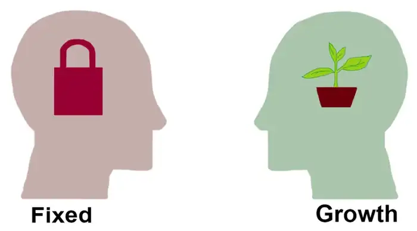
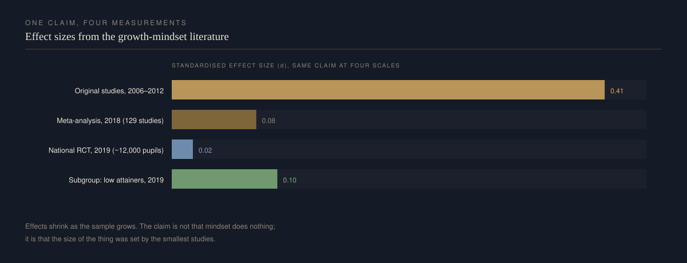

The claim
Carol Dweck's work distinguishes a fixed mindset — intelligence is a quantity you have — from a growth mindset — intelligence is a capacity you build. The educational claim is that teaching children the second belief improves their achievement, particularly after failure.
Maps, diagrams and images



It became one of the most widely adopted ideas in schooling worldwide, appearing in national curricula, teacher training and a great many motivational posters.
What the meta-analysis found
A 2018 meta-analysis pooled 129 studies and around 400,000 students. The correlation between mindset and academic achievement was small, and the effect of interventions was smaller again — an effect size near 0.08, roughly a hundredth of the variance. The authors also found signs of publication bias in the literature, meaning the true figure is probably lower than the published average.
What the large trial found
A 2019 national experiment in the United States randomised about 12,000 ninth-graders to a short online growth-mindset programme or a control. The average effect on grades was near zero. There was a real effect for one subgroup — lower-attaining students — and it was modest: a few grade points, in some schools, under some conditions.
That is not nothing. It is also not a scalable policy lever, and the difference between those two statements is where most of the argument now sits.
Beliefs about ability do matter — for how a student responds to a hard problem, and for whether they interpret difficulty as a signal to stop.
The intervention does not generalise — a 45-minute online module does not restructure a school, and the trials that worked had supportive contexts that are hard to ship.
The replication record is the story — original effects were inflated, the meta-analytic effect is tiny, and the field has mostly accepted this rather than defended it. That is what a working science looks like.
Why it is filed as live debate
Because the strong claim is dead and the weak claim is alive: mindset predicts something, interventions help a little in some places, and the disagreement is now about size and context rather than existence. Compare ego depletion, where the effect largely evaporated, and learning styles, where the mechanism was never there.
Sources for this page
- Wikipedia, “Mindset” — the fixed/growth distinction and its criticsen.wikipedia.org
- Sisk et al. (2018), Psychological Science — the meta-analysisdoi.org
- Yeager et al. (2019), Nature — the national experimentdoi.org
- Wikipedia, “Replication crisis” — why effect sizes shrinken.wikipedia.org
Open resources on this topic
- BookI Can't Do That, YET: Growth Mindset — ['Esther Pia Cordova', 'Maima W Adiputri'] · 2017 (Internet Archive, free to read)
- BookThe growth mindset coach : a teacher's month-by-month handbook for empowering students to achieve — Brock, Annie, author · 2016 (Internet Archive, free to read)
- BookThe Grit Guide for Teens : a Workbook to Help You Build Perseverance, Self-Control, and a Growth Mindset — Baruch-Feldman, Caren · 2017 (Internet Archive, free to read)
- PapersOpen-access articles: DOAJ · PubMed Central · Internet Archive Scholar
- BooksPublic-domain and borrowable copies: Open Library · Project Gutenberg · Google Books
More images
Cite this page
Momin, S. (2026). Growth Mindset. The Larger World Archive. https://drsamonline.github.io/LARGE_GLOBE/growth-mindset.htmlMomin, Sohil. “Growth Mindset.” The Larger World Archive, 2026, https://drsamonline.github.io/LARGE_GLOBE/growth-mindset.html.Momin, Sohil. “Growth Mindset.” The Larger World Archive, 2026. https://drsamonline.github.io/LARGE_GLOBE/growth-mindset.html.@misc{growth2026growth,
author = {Momin, Sohil},
title = {Growth Mindset},
year = {2026},
howpublished = {The Larger World Archive},
url = {https://drsamonline.github.io/LARGE_GLOBE/growth-mindset.html},
note = {Last reviewed 20 November 2026}
}Last reviewed 20 November 2026 · Corrections policy · this page is not peer reviewed